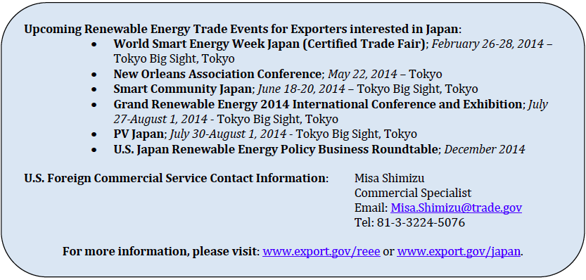

The Japanese renewable energy market is both large and widespread, encompassing multiple renewable energy subsectors. Yet the market has historically attracted little foreign competition, as many Japanese decision-makers have shown a strong preference for buying products from domestic companies.
The lack of investment has been punctuated by the presence of 10 vertically-integrated electric power companies, which has created challenges for the Japanese government. As newly installed renewable energy comes online and energy demand continues to grow, the government must facilitate the creation of an electricity system that can continue to meet the needs of Japanese citizens. Following Japan’s retreat from civil nuclear in the aftermath of the March 2011 earthquake, tsunami, and subsequent failure of the Fukushima Daiichi nuclear power plant, the challenges became even more severe, presenting a unique opportunity for American renewable energy exporters in Japan.
Japan had supported renewable energy development since 2005, but moved quickly after the disaster to bolster its previous national targets and spur heightened renewable energy investment. A feed-in-tariff (FIT) regime was launched that received significant international attention. In line with its aim for 28 GW of solar energy to be installed by 2020, Japan’s FIT rate for solar was particularly attractive. Almost immediately investors, developers, and component manufacturers flocked to the market, making Japan one of the most exciting and dynamic renewable energy markets globally.
Despite this, renewable energy still only accounted for 9 percent of electricity generation in 2012 (with non-hydro sources at only 1.6%). With most nuclear power offline, the urgent need was immediately filled with increased oil and liquefied natural gas imports (16 and 48 percent, respectively).1 The Japanese government is also under pressure from the business community to restore nuclear power. The draft revised energy plan released by METI in December 2013 acknowledged that an unspecified amount of nuclear power would inevitably be part of the nation’s energy mix.
Overview of the Renewable Energy Market
In the year following the introduction of the FIT, Japan approved a rapid 3.3 GW of new renewable energy capacity.2 The vast majority of this project pipeline was in the solar sector, but wind, biomass, and geothermal projects were also approved. In fact, despite an almost 10 percent reduction in the solar FIT in April 2013, the current roughly 38 yen per kWh rate is still attractive to investors and developers.3 The FIT for wind, hydro, biomass, and geothermal electricity production remained unchanged.
A Ministry of Economy, Trade, and Industry (METI) committee will start meeting in January 2014 to consider changes to the various FIT rates to be announced in April 2014. Dramatic reductions are not expected; and some reports even predict new FIT categories, such as off-shore wind. As such, ITA projects Japan to continue to be one of the most dynamic renewable energy markets through 2015.
This Top Markets case study is provided as a resource for U.S. exporters by the International Trade Administration. Every effort has been made to ensure that the information presented in this report is complete and accurate as of the date of publication; however, the U.S. Government assumes no responsibility or liability for any errors or omissions. Readers are advised to independently verify any information contained in this intelligence brief prior to relying on it. The information provided in this report does not constitute legal advice. Readers are further advised to conduct their own due diligence and seek the advice of legal counsel before entering into business ventures or other commercial arrangements in this market.
Challenges and Barriers to Renewable Energy Exports
Despite the significant projected investment expected to occur, Japan ranks only 17th on ITA’s list of top renewable energy export markets through 2015 due to stiff competition and a traditional lack of U.S. market share.
Although Japan’s ability to attract international renewable energy investment remains strong, questions persist as to whether all of its approved projects will be fully commissioned. Only 10 percent of approved solar projects have been fully commissioned to date, as a result of difficulties in obtaining financing, land zoning issues, and many developers’ anticipation that component prices will continue to fall.
Moreover, development has also been slowed by complications in reaching grid connection agreements with Japanese electric utilities. Japan’s utilities have the right to reject FIT approved projects if connecting the new renewable supply interferes with stability of the utility’s electricity supply.4 There are threats from some utilities to curtail renewables or deny access to their transmission grids, due to the variability that such a large increase in renewable energy capacity creates.5
For instance, Hokkaido Electric Power Company (HEPCO) has already rejected connection agreements and curtailed the amount of solar electricity it will accept. METI is working with HEPCO to install “smart” batteries that will allow the utility to accept more renewable energy connections, perhaps offering an opportunity for U.S. energy storage firms. Okinawa Electric Power Company is facing similar challenges.
In the solar industry, exports of U.S.-made modules face two additional challenges. First, intense competition from lower cost suppliers elsewhere in Asia has limited the share of the market captured by U.S. exporters. Chinese and Korean firms have captured a large share of the Japanese import market since the new incentives were announced, limiting opportunities for U.S. suppliers. And second, many Japanese firms that produce technology abroad have begun shipping products back to Japan from their facilities elsewhere around the world. Sharp and Kyocera, for example, now “export” solar products from Mexico and Eastern Europe back to Japan. These cells were originally meant for the U.S. and European markets, but have been redirected to meet orders in Japan.
Opportunities for U.S. Companies
The sheer size of Japan’s renewable energy expansion, and the investment opportunity it has created, should provide opportunities for U.S. exporters capable of providing cutting-edge technologies and services to the market. Capturing opportunities in the Japanese market, however, can be difficult. U.S. companies typically need a Japanese partner capable of identifying upcoming projects, conducting face-to-face meetings in Japanese, facilitating import procedures and delivery, and providing after-sales service. Additionally, ITA strongly advises renewable energy exporters to foster relationships with Japan’s regional utilities, along with their major contractors and suppliers.
Solar
Despite the challenges, Japan’s estimated solar market of nearly 17 GW through 2015 – more than any other country except China – makes it a critically important opportunity for American exporters. The market has traditionally been largely residential, but that is changing. Over 90 percent of approved solar projects in the first year of the FIT program were larger than 10 kW (indicating utility-scale projects).
There has consequently been a shift in the types of solar panels demanded by Japanese consumers. Higher priced, higher efficiency multicrystalline silicon modules are no longer the preferred solar technology in Japan. Instead, cheaper multicrystalline silicon modules are now more attractive, as these panels are more likely to be used in larger projects.7 This should create an opportunity for U.S. exporters, particularly thin film module manufacturers, who can offer lower costs to project developers.
The potentially lucrative residential solar module market, which has been dominated by either Japanese manufacturers or cheap Asian imports, is a difficult niche for U.S. suppliers. In addition, navigating the testing and certification requirements that are unique to Japan takes patience and financial commitment.
Biomass
While not as large as the solar opportunity in Japan, U.S. exporters of biomass pellets may also find considerable opportunities. According to Bloomberg New Energy Finance, through February 2013, Japan approved 27 new biomass projects totaling 147 MW under the FIT program. Most of the projects were announced by paper and lumber manufacturers.8 Because Japanese feedstock prices are higher than the global average, exports to Japan could be attractive to American pellet manufacturers, although competition from other international sources, such as Canada, remains fierce.
Ethanol
Japan produces only enough biofuels to meet 10 percent of its biofuels demand, with imports expected to account for the difference.9 Currently Thailand dominates the Asian ethanol market, but U.S. ethanol is cost competitive. In April 2013 – when the government extended the tax credit for gasoline blended with at least 3 percent bioethanol through March 2018 – future demand was given an important boost. Generally speaking, however, Japanese government policies favor electric vehicles over ethanol as a clean energy solution for transportation.
Geothermal
Estimates indicate that Japan ranks third in the world behind the United States and Indonesia in terms of geothermal resource potential, enjoying 15.7 GW of geothermal potential.10 Due to permitting and land use issues (most of the best geothermal spots are near national parks), only 537 MW, or 3 percent of this potential has been developed. Japan’s need to produce baseload power suggests that this resource can no longer be ignored. Japan may begin to revise its environmental regulations in the next several years to enable greater use of its geothermal resources.
Testifying to its recognition of this need, the Japanese government has allocated $126 million for the surveying of geothermal resources in Fiscal Year 2013. While no large projects will be constructed through 2015, exports of equipment and services may be possible in the surveying, exploratory drilling, and resource assessment. These are areas in which U.S. companies already excel. Additionally, some U.S developers are finding success by working with hot springs resorts and local municipalities with geothermal assets. These small-scale production facilities provide local power as well as sell excess electricity back to utilities.
Hydropower
Japan’s hydropower market is expected to be limited through 2015 with only modest growth and export potential expected. Small hydro FIT rates did facilitate the approval of several small hydropower projects totaling 27.9 MW.12 As these projects are developed, U.S. firms may find some opportunities exporting hydropower services, like environmental assessment consulting or engineering expertise. Most hydro products are expected to be procured locally.
Wind
ITA expects the Japanese government’s next renewable energy policy push to be in the wind energy sector. Indeed, METI has already estimated the cost of enhancing the Japanese electricity grid in Hokkaido and Tohoku in an effort to support future wind development. According to some plans, METI will develop a cost-bearing scheme called a Special-Purpose Corporation (SPC) to invest in new grid construction. The SPC would be half financed by a wind power generation company. Local utilities would then pay the SPC for the use of the new grid infrastructure. Additionally, METI is considering adding a new offshore wind FIT in the next round of FIT adjustments in March 2014. Press reports indicate this will be the most lucrative FIT.
Unfortunately, U.S. exports in the wind sector are expected to be limited to niche markets like small-scale wind power, as the United States enjoys very little market share in Japan.


1. METI, “Energy Situation in Japan.” December 2013.
2. Ibid.
3. Bloomberg New Energy Finance, “H1 2013 Japan Market Outlook: FIT Drives Solar Surge” (June 21, 2013) pp. 1
4. Bloomberg New Energy Finance, “Solar – Japan – Research Note” (June 28, 2013) pp. 4
5. Bloomberg New Energy Finance, “H1 2013 Japan Market Outlook: FIT Drives Solar Surge” (June 21, 2013) pp. 1
6. Ibid 5
7. Bloomberg New Energy Finance, “Solar – Japan – Research Note” (June 28, 2013) pp. 5
8. Bloomberg New Energy Finance, “H1 2013 Japan Market Outlook: FIT Drives Solar Surge” (June 21, 2013) pp. 14
9. Bloomberg New Energy Finance, “H1 2013 Japan Market Outlook: FIT Drives Solar Surge” (June 21, 2013) pp. 15
10. Bloomberg New Energy Finance, “H1 2013 Japan Market Outlook: FIT Drives Solar Surge” (June 21, 2013) pp. 15
11. Ibid, 16
12. Bloomberg New Energy Finance, “H1 2013 Japan Market Outlook: FIT Drives Solar Surge” (June 21, 2013) pp. 16
13. BNEF, “H1 2012 Japan Market Outlook.”
About the Office of Energy and Environmental Industries
The Office of Energy and Environmental Industries (OEEI), a part of the International Trade Administration’s Industry and Analysis unit, is dedicated to enhancing the global competitiveness of U.S. energy and environmental companies, expanding their market access, and increasing their exports. Industry analysts perform strategic research and analysis in order to shape and implement trade policy, create conditions that encourage innovation, lower the cost of doing business, and promote U.S. economic growth. For more information or to access other reports related to the Renewable Energy and Energy Efficiency Export Initiative, contact the office at (202) 482-5225 or visit www.export.gov/reee.
The International Trade Administration’s mission is to create prosperity by strengthening the competitiveness of U.S. industry, promoting trade and investment, and ensuring fair trade and compliance with trade laws and agreements.